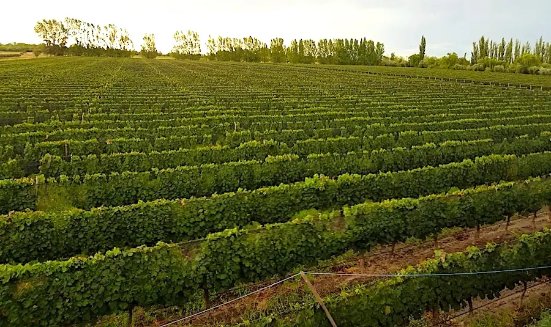
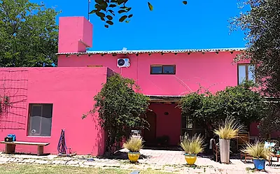

Cuadro Benegas, San Rafael, Mendoza
Charming Vineyard Pool Home with Malbec Grapes & Orchard on 32 Acres
View of the Sierra Pintadas

Die vollständige Beschreibung dieses Objekts liegt noch auf Englisch vor. Wir übersetzen sie eine nach der anderen. Fragen Sie Byron in der Zwischenzeit über WhatsApp oder E-Mail — er erzählt Ihnen alles auf Deutsch.
This 32-acre farm (13 hectares) is located in Cuadro Benegas about 20 minutes from San Rafael. It has steadily produced income for many years and has 2-story owners home with a great view of the Sierra Pintadas (Painted Hills).
It is nestled in a community of three other homes owned by ex-pats in an extremely desirable area and is very secure. The home has a balcony over- looking the vineyard and the hills.
There are three bedrooms and two baths, mini- splits for heating and cooling and a "Russian Stove" which keeps the home toasty in winter. There is a small pool, a covering for vehicles and two large outdoor patios with barbeque grills and lawn furniture.

In addition to the malbec vineyard, the farm has an old plum orchard and a number of olive trees which produce olives that they trade to a local factory for olive oil. In the past they had had a large garden producing a bounty of harvest, including corn, tomatoes, squash, melons, peppers, etc.
A tractor with equipment is included in the sale, and possibly an automobile.
Die übrigen Fotos
8 weitere Fotos dieses Objekts. Tippen Sie eines an, um es groß zu sehen.

{kind=link}
{kind=link}
{kind=link}
{kind=link}
{kind=link}
{kind=link}
{kind=link}
{kind=link}
{kind=link}